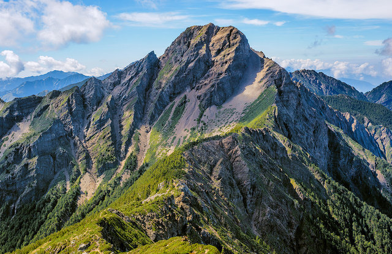

6 / 9 possibilities
Main Islander!
Your definition for Taiwanese is all citizens living on the main island "Taiwan". All people who have historically lived in Taiwan, including people of ethnic Japanese, Dutch or Spanish descent (or various other ethnic ancestries) who historically colonized Taiwan or settled in Taiwan back when Taiwan was fully or partially controlled by the Empire of Japan, the Empire of the Netherlands or the Empire of Spain, respectively.
The main island of Taiwan, formerly known in Western literature as Formosa by the Dutch, makes up 99% of the land area of the territories under ROC control. The main island measures 35,808 square kilometres (13,826 sq mi) and lies some 180 kilometres (112 mi). Several peaks exceed 3,500 m in height - the highest, Yu Shan at 3,952 m (12,966 ft), makes Taiwan the world's fourth-highest island. The tectonic boundary that formed these ranges remains active, and the island experiences many earthquakes, a few of them highly destructive. There are also many active submarine volcanoes in the Taiwan Straits.
I have lived in Taiwan for 40 years and can be considered a Taiwanese. - President Chiang Ching-kuo (July 17, 1987)
This definition could become controversial giving that it justifies how the settlers and colonizers could also be considered as "Taiwanese" after the traumatic history of colonizing indigenous people and early immigrated people.